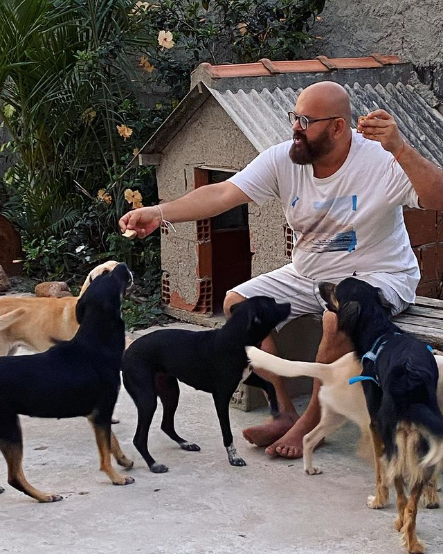

•O que são ONG's?
As organizações não governamentais (ONGs) de defesa animal desempenham um papel importante na proteção e bem-estar animal e na conscientização pública sobre a importância da vida animal. Essas organizações trabalham para defender e proteger animais vulneráveis, seja por meio de resgates, campanhas de conscientização, apoio financeiro e muito mais.
Uma das principais funções das ONGs animais é a proteção e cuidado de animais abandonados, vítimas de crueldade, exploração e negligência. Essas organizações costumam ter voluntários e profissionais treinados para cuidar de animais resgatados, fornecendo-lhes abrigo, comida, cuidados médicos e amor. Frequentemente, essas ONGs também trabalham com governos locais para salvar animais de situações perigosas, como desastres naturais. 
Além disso, as ONGs de animais desempenham um papel importante na educação e conscientização pública sobre a importância de respeitar e cuidar dos animais. Muitas dessas organizações realizam eventos educacionais, palestras e eventos para divulgar o bem-estar animal, os direitos dos animais e a adoção responsável.
Em resumo, as ONGs de animais desempenham um papel fundamental na defesa e proteção dos animais, promovendo a conscientização pública e ações práticas para protegê-los de situações de vulnerabilidade e crueldade. Essas organizações também trabalham para promover mudanças na legislação e nas políticas públicas que afetam os animais, ajudando a construir um mundo mais justo e compassivo para todas as formas de vida.
•Qual é a importância de Ajudar as ONG's?
•Há muitas razões pelas quais é importante ajudar as ONGs de animais. Aqui estão algumas das principais necessidades:
Proteção dos direitos dos animais: As ONGs de animais desempenham um papel fundamental na proteção dos direitos dos animais, lutando contra o abuso, a exploração e o comércio ilegal de animais. Ao apoiar essas organizações, você está contribuindo para a proteção dos direitos dos animais e ajudando a promover o bem-estar animal.
Resgate e cuidado de animais abandonados ou maltratados: As ONGs de animais frequentemente resgatam e cuidam de animais que foram abandonados, maltratados ou que sofrem de doenças ou ferimentos. Ao ajudar essas organizações, você está ajudando a fornecer cuidados e tratamento adequados para esses animais em necessidade.
Conscientização e educação: As ONGs de animais também desempenham um papel importante na conscientização e educação sobre os direitos dos animais e o cuidado responsável de animais de estimação. Ao apoiar essas organizações, você está ajudando a aumentar a conscientização sobre essas questões e promover a mudança social positiva.
Contribuição para a comunidade: As ONGs de animais muitas vezes oferecem serviços valiosos para a comunidade, como cuidado de animais de estimação, programas de adoção e treinamento de animais de serviço. Ao apoiar essas organizações, você está ajudando a melhorar a vida dos animais e das pessoas em sua comunidade.
Ajuda a manter a sustentabilidade das ONGs de animais: As ONGs de animais geralmente dependem de doações e voluntários para financiar suas operações. Ao ajudar essas organizações, você está contribuindo para sua sustentabilidade financeira e ajudando a garantir que elas possam continuar a realizar seu trabalho importante.
Essas são apenas algumas das razões pelas quais é importante ajudar as ONGs de animais. Ao apoiar essas organizações, você está ajudando a promover o bem-estar animal, proteger os direitos dos animais e contribuir para a comunidade em geral.